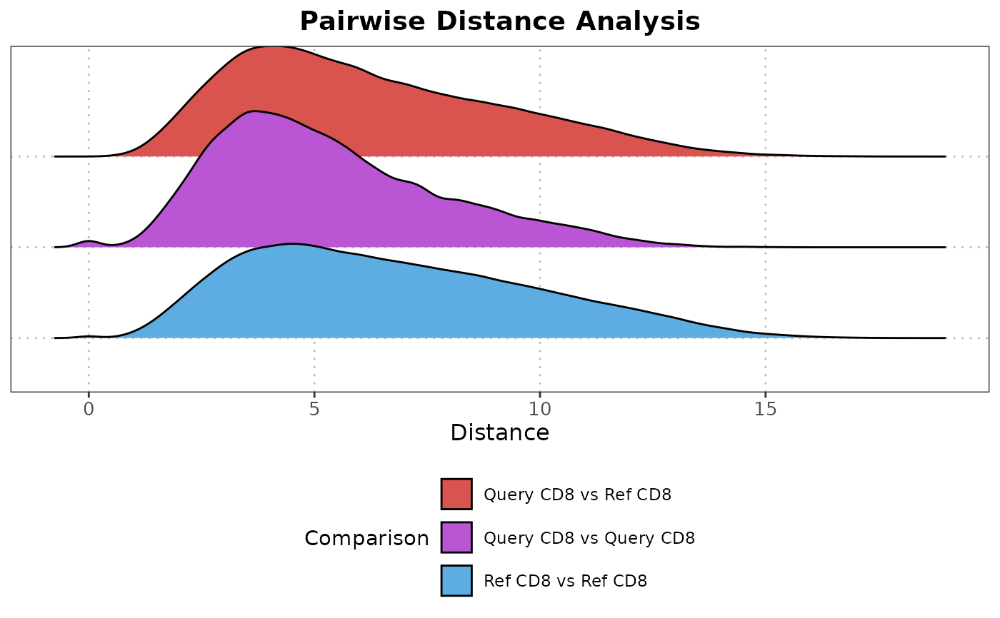

R/plotPairwiseDistancesDensity.R
plotPairwiseDistancesDensity.RdThis function calculates pairwise distances or correlations between query and reference cells of a specified cell type and visualizes the results using ridgeline plots, displaying the density distribution for each comparison.
A SingleCellExperiment containing the single-cell
expression data and metadata.
A SingleCellExperiment object containing the single-cell
expression data and metadata.
The column name in the colData of query_data that identifies the cell types.
The column name in the colData of reference_data that identifies the cell types.
The query cell type for which distances or correlations are calculated.
The reference cell type for which distances or correlations are calculated.
A numeric vector specifying which principal components to use in the analysis. Default is 1:5.
If set to NULL, the assay data is used directly for computations without dimensionality reduction.
The distance metric to use for calculating pairwise distances, such as euclidean, manhattan, etc. Set to "correlation" to calculate correlation coefficients.
The correlation method to use when distance_metric is "correlation".
Possible values are "pearson" and "spearman".
Name of the assay on which to perform computations. Default is "logcounts".
Numeric value controlling the smoothness of the density estimate; smaller values create more detailed curves. Default is 0.25.
A ggplot2 object showing ridgeline plots of calculated distances or correlations.
Designed for SingleCellExperiment objects, this function subsets data for specified cell types,
computes pairwise distances or correlations, and visualizes these measurements through ridgeline plots.
The plots help evaluate the consistency and differentiation of annotated cell types within single-cell datasets.
# Load data
data("reference_data")
data("query_data")
# Example usage of the function
plotPairwiseDistancesDensity(query_data = query_data,
reference_data = reference_data,
query_cell_type_col = "SingleR_annotation",
ref_cell_type_col = "expert_annotation",
cell_type_query = "CD8",
cell_type_ref = "CD8",
pc_subset = 1:5,
distance_metric = "euclidean",
correlation_method = "pearson")
